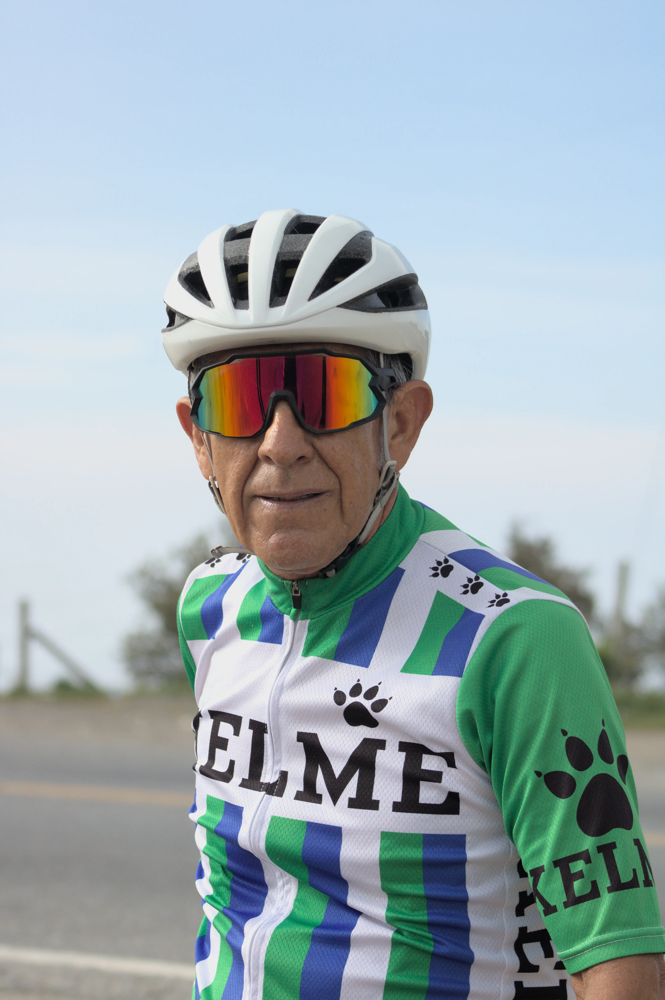
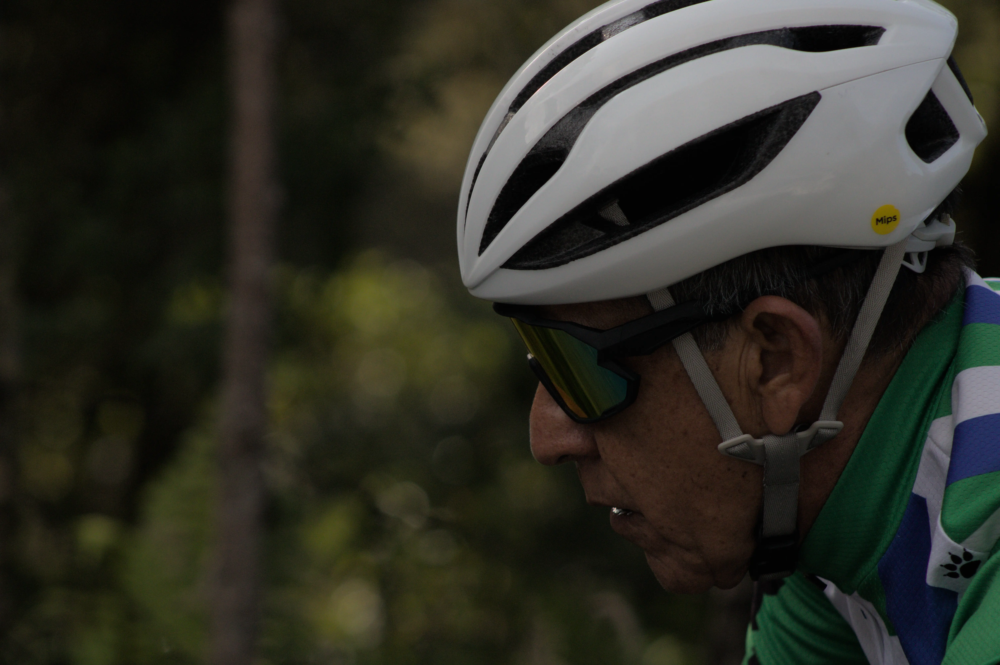
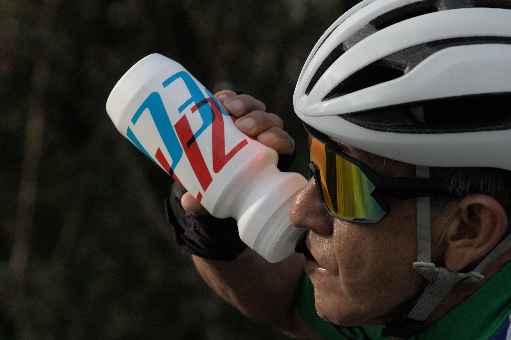
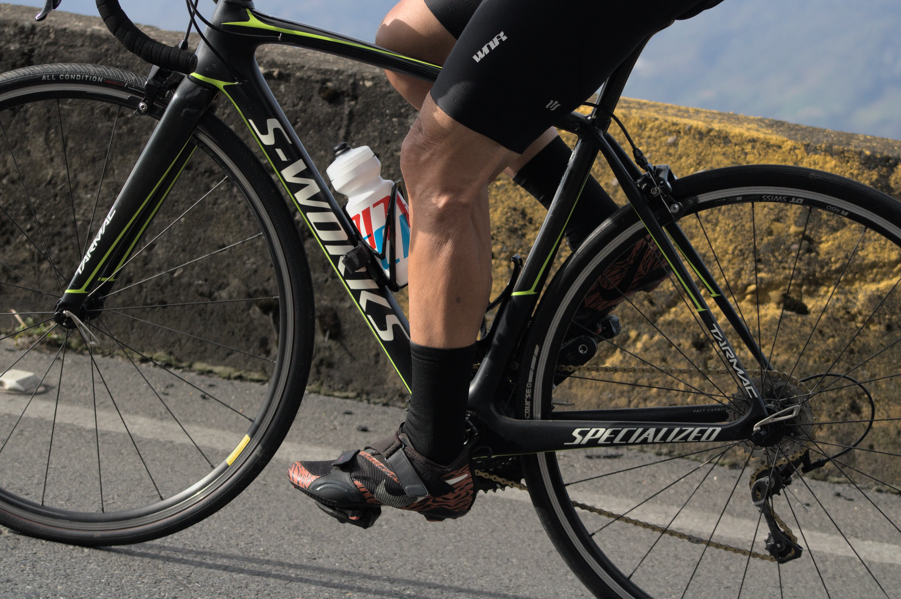

UN ÍDOLO DEL CICLISMO COLOMBIANO
CARLOS EMIRO
PASIÓN QUE INSPIRA


SU HISTORIA
UN CICLISTA
CON GRANDEZA
Carlos Emiro, nacido en Colombia, se convirtió en un referente del ciclismo nacional gracias a su talento, su esfuerzo y su amor por el deporte.
Su nombre quedará para siempre en la historia del ciclismo colombiano.
CONOCE SU HISTORIA →
SUS LOGROS
ORGULLO
DE COLOMBIA
Ganador de la etapa España en la Época Dorada del ciclismo colombiano, Carlos Emiro demostró que el talento y la pasión pueden llevar muy lejos.
DESCUBRE SUS LOGROS →

SU HISTORIA SIGUE INSPIRANDO
SÉ PARTE DE SU LEGADO →
ARCHIVO VISUAL